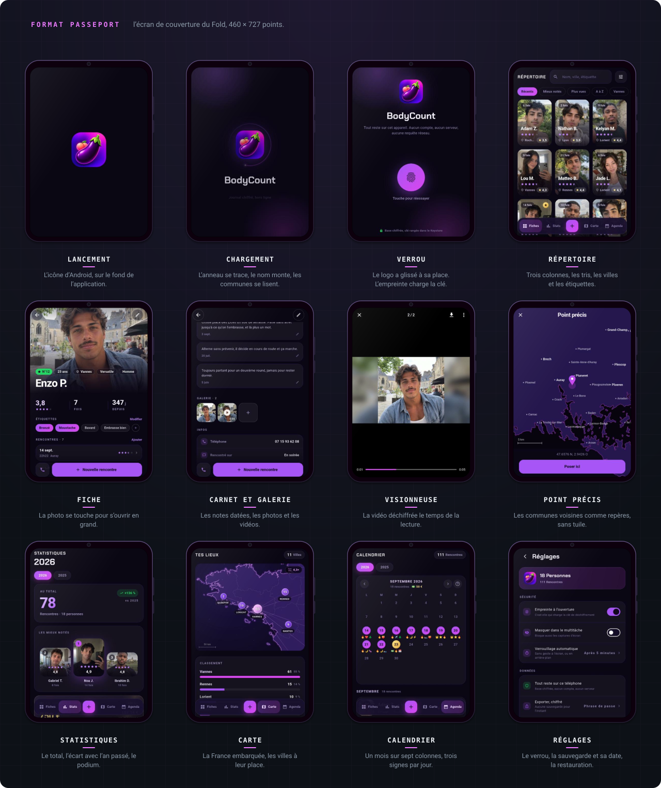
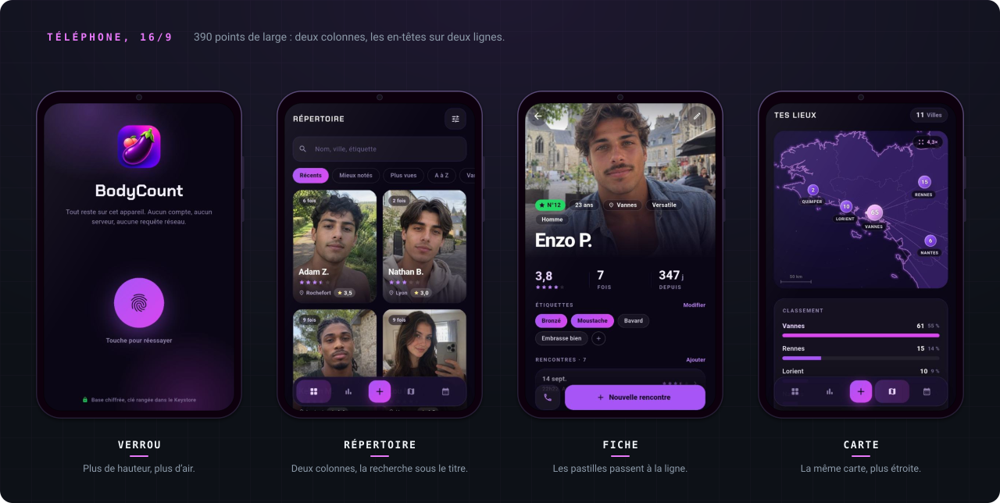

Verrou
L'empreinte ouvre la clé
Elle ne déverrouille pas un écran : elle fait entrer la clé maîtresse en mémoire. Avant, la base n'est que du bruit.
Journal personnel chiffré, hors ligne, sur Android. Aucun serveur, aucun compte, aucune télémétrie. Une photo, des notes, un avis sur la soirée : tout reste sur le téléphone, derrière ton empreinte.

L'application rejouée écran par écran. Les visages sont ceux du jeu d'essai, des portraits générés : personne de réel.
Un endroit où garder ce qui entoure tes rencontres, bien rangé et gardé pour toi. Rien de ce qui existait ne faisait les deux.
Elle ne déverrouille pas un écran : elle fait entrer la clé maîtresse en mémoire. Avant, la base n'est que du bruit.
La grille se filtre pendant qu'on tape, par prénom, ville ou étiquette. Chaque carte porte la photo, le nombre de fois et la moyenne.
Le total et son écart avec l'année précédente, le rythme en douze barres, le podium et ce que ça a rapporté.
Dessinée depuis sa vraie géométrie, sans tuiles ni réseau. Les villes se regroupent en bulles et se séparent au zoom.
Un jour plein porte un disque, doré quand la soirée a rapporté, et jusqu'à trois signes de ce qu'il a eu de remarquable.
Chiffrées en AES-GCM dès l'import, la copie effacée : rien n'apparaît dans la galerie du téléphone.
Un fichier qui se relit sur un autre téléphone, et nulle part sans la phrase de passe. Un bandeau prévient quand la dernière a plus d'un mois.
Un montant laissé vide veut dire rien, pas zéro euro : la moyenne ne compte que les soirées payées.
L'écran de couverture en priorité, puis le téléphone classique, l'écran déplié et le paysage : de deux à quatre colonnes.
Pensée d'abord pour le format passeport, l'écran de couverture d'un Galaxy Z Fold : large et court. C'est là qu'elle sert tous les jours. Puis le téléphone classique, l'écran déplié et le paysage.

Au lancement, l'application reprend l'icône là où Android l'a posée, trace un anneau autour et la fait glisser jusqu'à l'écran d'ouverture. L'empreinte n'est demandée qu'une fois l'animation terminée.

Sur un téléphone classique en 16/9, la mise en page passe à deux colonnes et range la recherche sous le titre.

Sur l'écran déplié, en 4/3, la navigation devient un rail à gauche et le répertoire passe à quatre colonnes.

Couché, l'écran passe à 1200 points de large. La fiche se partage alors en deux volets, la photo à gauche sur toute la hauteur.
Tous facultatifs sauf la date, déjà réglée à maintenant. La note se donne par demi-point en touchant la moitié d'une étoile.
À l'enregistrement, une seule fonction fait relire la fiche, le rang, le répertoire, les statistiques, le calendrier et la carte : aucun écran ne garde un chiffre périmé.

Tant qu'Android n'a pas reconnu ton doigt ou ton code, la base, les photos et les vidéos ne sont que du bruit sur le disque.
Une clé maîtresse de 32 octets, tirée au hasard au premier lancement, dort dans des préférences chiffrées par le Keystore d'Android.

Sans geste à l'écran, ou au retour d'arrière-plan, après un délai réglable. Il attend la fin d'un travail en cours : une sauvegarde ou une longue vidéo qui se chiffre ne se coupent pas en route.
Il se coupe aussi dans les réglages : le chiffrement reste, mais la clé se charge alors sans preuve d'identité, et l'écran le dit avant de l'accepter.

Une photo ou une vidéo n'entre jamais en clair dans BodyCount. Elle passe au coffre, et la copie rendue par le sélecteur d'Android est effacée.
Chaque photo est un fichier à part, chiffré en AES-GCM, nommé par un UUID qui ne dit rien de son contenu. Pour l'afficher, elle est déchiffrée en mémoire, le temps de la regarder.
Les vidéos passent par un flux chiffré par morceaux d'un mégaoctet : intervertir deux morceaux ou couper la fin fait échouer la lecture, au lieu de rendre une vidéo amputée sans rien dire.

Chiffrée par une phrase de passe plutôt que par la clé du téléphone : elle se relit sur un autre appareil, et nulle part sans elle. La phrase passe par PBKDF2 en 210 000 tours, puis le fichier s'écrit en flux, sans jamais toucher le disque en clair.
Une restauration vérifie tout avant de toucher à quoi que ce soit. Une phrase fausse, un octet abîmé ou une coupure en route : les fiches du téléphone restent intactes.

Une carte à tuiles enverrait à un serveur, à chaque déplacement du doigt, la liste exacte des endroits regardés. La France est donc embarquée.
La carte s'ouvre sur le vrai cœur d'activité : les villes qui font les deux tiers des rencontres. Elle se pince jusqu'à vingt fois, et la règle se regradue seule.
Aucune pastille n'est déplacée d'un pixel. Deux villes trop proches deviennent une bulle qui porte la somme, et qui se scinde dès qu'on s'approche : Vannes et Auray sont à dix-sept kilomètres, c'est de la géographie.

Le nom exact d'abord, en ignorant accents, tirets et « St ». Puis un début de nom, une faute d'une ou deux lettres, un nom suivi d'un quartier. À chaque étape, la plus peuplée l'emporte.
Le référentiel officiel des communes est embarqué lui aussi. Le seul script du projet qui touche au réseau tourne sur la machine du développeur, jamais sur le téléphone.

La question qu'on se pose le plus souvent n'est pas « combien », mais « quand » : c'était quel soir, il y a combien de temps, est-ce que ça a été une bonne période.

Vingt-cinq signes en tout, tous déduits de ce que l'application enregistre déjà. Sous chaque jour, jusqu'à trois, du plus rare au plus banal. Une légende dit précisément ce qui déclenche chacun : pas « une bonne soirée », mais « une note de cinq sur cinq ».

Chaque chiffre sort d'une requête SQL : la base renvoie douze entiers pour les douze barres, pas toutes les rencontres. Une année sans précédent n'affiche pas de pourcentage plutôt que de diviser par zéro.

Chaque lettre refait une seule requête sur la base chiffrée. Les pastilles de ville et d'étiquette s'ajoutent à la recherche au lieu de la remplacer, et un tri ne change que l'ordre.
« Aucune requête réseau » s'écrit facilement. Ici, ce n'est pas une promesse du code mais une règle d'Android : l'application ne demande pas la permission Internet, et sans elle le système refuse d'ouvrir la moindre connexion.
Tout vit dans une base chiffrée sur le téléphone. Il n'y a nulle part ailleurs où aller.
Rien à créer, rien à retenir, sauf la phrase de passe de tes sauvegardes.
Rien ne mesure ce que tu fais. Rien ne sort, sauf ce que tu demandes.
Sans lire une ligne de code. La liste est courte : l'empreinte, puis deux permissions qu'ajoutent des bibliothèques, et qui ne permettent pas de se servir du réseau.
aapt2 dump permissions app-arm64-v8a-release.apk
Restent quatre sorties, et aucune ne s'ouvre seule : chacune attend un doigt, et passe la main à une autre application.


Flutter, Riverpod, SQLCipher et quelques lignes de Kotlin. Cinq couches, et une règle : une couche ne connaît jamais celle du dessus.


Un écran ne voit pas SQLite, un dépôt ne voit pas Riverpod, et rien ne lit un fichier du coffre sans passer par le trousseau.

Sept tables, schéma v7. Tout ce qui se rattache à une personne part avec elle, et c'est le schéma qui le garantit, pas une boucle de suppression écrite à la main.

SQLCipher, le Keystore et l'AES natif n'existent que sur Android : les tests tournent sur un émulateur, avec les vraies bibliothèques. Six d'entre eux pilotent l'application entière, au doigt.
Deux applications, qui s'installent côte à côte. Les liens mènent toujours à la dernière version publiée.
La vraie. Elle démarre vide et n'attend que tes fiches. Elle ne contient pas le jeu d'essai : ni les profils, ni leurs visages.
Télécharger l'APKRemplie des fiches du jeu d'essai, avec leurs photos, leurs rencontres et leurs carnets. Elle s'ouvre sans empreinte, pour tout parcourir sans rien saisir.
Essayer la démoPour une application qui gardera ce genre de données, elles valent la minute qu'elles prennent. L'empreinte du fichier doit être celle publiée avec la version.
Et le certificat qui le signe doit être celui-ci, le même pour toutes les versions : Android refuse une mise à jour signée d'une autre clé, ce qui écarte aussi un APK retouché en chemin.
sha256sum BodyCount.apk BodyCount-demo.apk # 6fd713f7036788d57fe95d8a6f9a27f030374d7c9264f9d8e83d0cfbce569bd4 BodyCount.apk # e2bdd13500aa165746168fde9b5319c3df97f41ae81b96408de12f0be28235f2 BodyCount-demo.apk
apksigner verify --print-certs BodyCount.apk
# SHA-256 : ac09674e066658991aeb60f02e1386423b5e14dede4bd6c844f542785fef86d1

Le chiffrement s'appuie sur des primitives éprouvées et sur le Keystore d'Android, mais l'assemblage n'a été relu par personne d'autre que son auteur. Si tu comptes y mettre des données dont la fuite te coûterait quelque chose, lis le code avant, ou ne le fais pas.
Les visages du jeu d'essai sont des portraits générés, qui ne représentent personne. Ils n'existent que dans la démo.
Chiffré, hors ligne, sans serveur ni compte. Le code est ouvert : libre de le lire, de le reprendre et de le modifier.